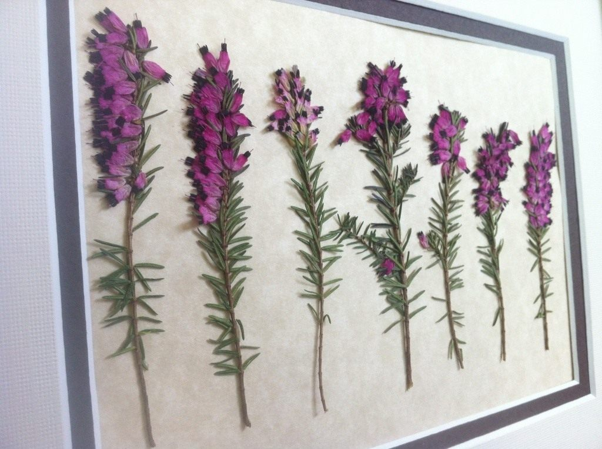

Гербарий
Герба́рий (лат. herbárium, от herba — «трава») — коллекция засушенных растений, препарированных в согласии с определёнными правилами. Обычно гербарные образцы после высушивания монтируются на листах плотной бумаги. В зависимости от вида растения на гербарном листе может быть представлена целая особь, группа особей или часть крупного (например, древесного) растения.
Гербарием так же называют книгу с подробным описанием растений и их изображением.
Первые гербарии появились в Италии в XVI веке. Их изобретение, связанное с изобретением бумаги, приписывается врачу и ботанику Луке Гини, основателю Пизанского ботанического сада. Гербарий самого Гини не сохранился, однако до наших дней дошли коллекции его непосредственных учеников.
В более широком смысле, гербарий — это здание, в котором хранится коллекция засушенных растений, или учреждение, занимающееся организацией хранения коллекции и её обработки
Все гербарии мира независимо от их ведомственной принадлежности регистрируются в международной базе данных «The Index Herbariorum». Им присваивается акроним — уникальный буквенный код, составленный из одной — шести букв английского алфавита (например, K, MW, MHA, SYKO). Сокращённые названия гербариев используются в качестве универсальных ссылок на место хранения гербарных образцов, цитируемых в ботанических научных работах. В «Индексе» на 2013 год насчитывается 3293 гербария из 168 стран, в которых работает более 10 тысяч ботаников.
